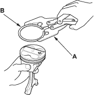
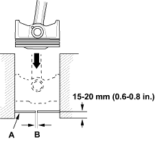

- Remove the piston from the cylinder block (see page 7-13).
- Using a ring expander (A), remove the old piston rings (B).

- Clean all ring grooves thoroughly with a squared-off broken ring or ring groove cleaner with a blade to fit the piston grooves.
The top and 2nd ring grooves are 1.2 mm (0.05 in.) wide. The oil ring groove is 2.0 mm (0.08 in.) wide.
File down a blade if necessary.
Do not use a wire brush to clean the ring grooves, or cut the ring grooves deeper with the cleaning tools.
NOTE: If the piston is to be separated from the connecting rod, do not install new rings yet.

- Using a piston, push a new ring (A) into the cylinder bore 15 - 20 mm (0.6 - 0.8 in.) from the bottom.

- Measure the piston ring end-gap (B) with a feeler gauge:
- If the gap is too small, check to see if you have the proper rings for your engine.
- If the gap is too large, recheck the cylinder bore diameter against the wear limits (see page 7-16).
If the bore is over the service limit, the cylinder block must be rebored.
Piston Ring End-Gap:
Top Ring
Standard (New):
0.20 - 0.35 mm
(0.008 - 0.014 in.)
Service Limit:
0.60 mm (0.024 in.)
Second Ring
Standard (New):
0.50 - 0.65 mm
(0.020 - 0.026 in.)
Service Limit:
0.75 mm (0.030 in.)
Oil Ring
Standard (New):
0.20 - 0.70 mm
(0.008 - 0.028 in.)
Service Limit:
0.80 mm (0.031 in.)